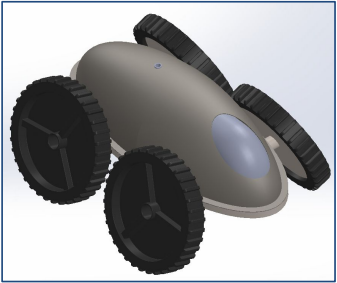

Designing a Robot for Water Pipe Exploration and Cleaning
Overview
For my undergraduate senior project, I was part of the group that was tasked with designing a digital prototype of a robot that cleans sediment out of underground pipes to minimize the costly and invasive pipe maintenance. The primary design approach was to measure the feasibility of using and producing an "autonomous robot"-style sediment removal solution in an underwater environment given the inherent complexity of the fluid mechanics involved.
Our objective was to develop a proof of concept design that could withstand obstacles up to 6 inches, select motors and batteries to operate in aquatic, high-pressure environments, and include room for a vacuum filtration system to clean resting sediment. I was in charge of performing calculations to analyze the surrounding environment and all impactful forces on the robot. We also picked a battery pack, motor, and device weight that mathematically should allow the robot to perform its tasks.
Final Design
Our final design, which is shown to the right, includes the following:
- Half-ellipsoid outer shell
- Four patterned wheels with diameters of 18 inches
- Waterproof interior control box containing electronics
- Interior holding bag for filtering solute
For more information, please see our final report, which is available here.
